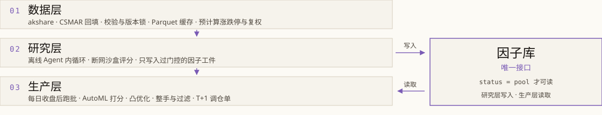
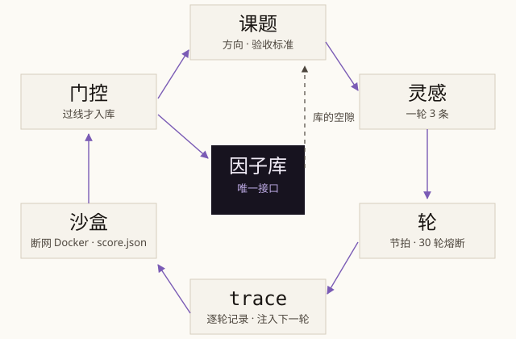
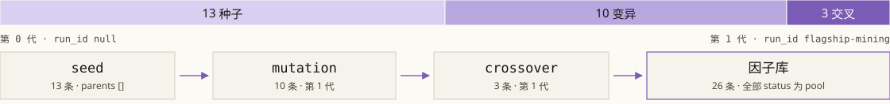

第 1 部分 / 封面
拉普拉斯奖学金申请答辩 / 2026
ASTER星菀
面向 A 股的日频量化系统：Agent 挖因子、AutoML 合成信号、凸优化组合，每日收盘后产出可执行的 T+1 调仓单。
- 姓名
- 陶唐
- 学校
- 上海财经大学
- 学院
- 信息管理与工程学院
- 专业
- 数据科学与大数据技术
- 年级
- 2024 级
- 学号
- 2024111155
- 申请日期
- 2026-10-17
第 2 部分 / 个人简介
个人简介
学业基础
GPA 3.81/4.0 专业排名前 5%
数学与统计课程构成底子：数学分析、线性代数、概率论与数理统计、随机过程、时间序列分析。成绩稳定在专业前列，国家奖学金 2025。
主修课程
- 机器学习与数据挖掘
- 数据结构与算法
- 数据库原理与 SQL
- 最优化方法与金融计量
- Python 程序设计与数值计算
治学理念
先把评测建起来，再谈改进。假设要写成代码，结论要能被别人重跑；一份结果只有在自己能复现时才算数。
第 3 部分 / AI 学习与技术积累
AI 学习与技术积累
课程
机器学习、深度学习、强化学习导论、最优化方法、金融计量。课程之外按项目需要补读论文与官方文档，边做边校准理解。
技术栈
- Python：polars、cvxpy、AutoGluon
- TypeScript / Node 编排与调度
- Docker 断网沙盒
- Parquet / SQL 数据层
- Git 与可复现实验记录
实习中的 AI 实践
三段量化实习分别落在因子研究、策略回测与组合执行。用大模型写研究脚本、做因子初筛，再由回测与门控决定去留；AI 负责加速，评测负责裁决。
认知
大模型擅长提出假设与写代码，判断必须交给可复现的评测。AI 的价值在于把研究变成能持续运行的循环，单次答案不构成能力。
第 4 部分 / 项目
项目总览
A 股 alpha 衰减快，靠单因子与手工调参撑不住；研究脚本散落，回测与跟单口径不一，结论难以复现。ASTER 把这条研究链做成可以持续运行的流水线。
01
问题
假设靠人想，试错靠手跑；样本外与实盘口径不一致；因子、信号与组合散在三处，改一个环节牵动全局。
02
目标
Agent 提假设、沙盒评分、门控入库；每天收盘后跑完整链，产出可执行的 T+1 调仓单。结论可复现，过程可审计。
03
三层架构
- 数据层：增量、校验、缓存与预计算。
- 研究层：离线跑 Agent 内循环，只写因子库。
- 生产层：每日跑批，读因子库，落调仓单。
研究层与生产层解耦，因子库是唯一接口；交接物只有因子工件与信号工件。
第 4 部分 / 项目
系统架构

数据层
akshare 每日增量、CSMAR 回填；校验完整性、异常值与复权一致性后落 Parquet 缓存，预计算涨跌停、复权价、交易日历与分红送转。
研究层
离线 Agent 内循环，可连跑数天；在断网沙盒里评估假设，只把过门控的因子工件写进因子库，不接触生产账户。
生产层
每个 T 日收盘后每日跑批：重算 pool 因子、AutoML 打分、凸优化组合、整手与过滤，落成 T+1 调仓单，人工跟单后回录。
第 4 部分 / 项目
Agent 因子挖掘

-
课题
任务与预算单元：方向边界、禁区、验收标准；活跃课题上限 3。
-
灵感
课题内的一次尝试，一条假设加构造思路；一轮并行评估 3 条。
-
轮
节拍单位，全部评完才进下一轮；单课题 30 轮熔断。
-
trace
各轮假设、评估与反馈的按序记录，作用域限单课题，下一轮注入。
-
沙盒
断网 Docker，数据只读挂载，跑 eval.sh 得 score.json。
-
门控
进库前必须全部通过的判定集合，给出单一过线或不过线结论。
- 一轮
- 3 条灵感
- 熔断
- 30 轮
- 休眠
- 连续 3 轮无产出
- 完成
- 入库 10 个
低相关因子
第 4 部分 / 项目
因子库与门控

01
源头分流
context 注入方向分布地图，要求走低密度方向。
02
生成避让
proposal 附同方向已入库因子的假设与思路。
03
评分折扣
score = quality × (1 − |max_corr| / 0.7)，写进 score.json。
04
入库与整库
|max_corr| > 0.7 拒入；整库同簇留强；pool ≤ 总数 50%。
lineage{op, parents, run_id, generation} 记在每条入库记录上：op 取 seed、mutation、crossover；parents 记父因子，run_id 记来源跑批（flagship-mining），generation 记代数——第 0 代 13 条、第 1 代 13 条。
第 4 部分 / 项目
AutoML 与 AutoResearch
模型层把因子工件压成截面信号：AutoML 已经跑通训练到信号的全链，AutoResearch 仍是 M5 路线图。
AutoML
已实现- 数据集工件 宽表 (date, instrument, 特征, label, delay_days)，特征直接用因子工件 value。
- AutoGluon Tabular + 本机 GPU，presets medium_quality；旗舰 1800 秒 / 19.9 万行。
- walk-forward AutoGluon 只训单窗口，切分与拼接在 Python 侧完成。
- 模型注册表 每 20 个交易日重训，500 日窗口、60 日预热；按「最新且未过期」选版。
- 信号工件 (date, instrument, score)，组合层与回测只读信号，不直接调模型。
AutoResearch
规划中M5 远期路线：复用 Agent 内循环，Proposal 改训练配置或模型结构代码，eval 以 walk-forward 样本外 IC 打分。
- Agent 调参：在搜索空间里改写训练配置，按样本外 IC 接受或拒绝。
- 网络结构演化：让 Agent 改模型结构代码，与调参协同演化，参照 RD-Agent。
- 前置依赖：M4 的滚动重训与注册表跑稳后才启动，当前不进入生产链。
尚无可引用的实验结论；这一栏按路线图表述，不代表已有能力。
第 4 部分 / 项目
组合优化与生产闭环
01
约束族
满仓、禁卖空；个股带成分 ±0.005、非成分 ≤0.005；行业、市值与六风格偏离各 ±0.005×std；覆盖度 ≥ 0.5；换手 Σ|w−w_prev| ≤ 0.2。目标 min −αᵀw + λwᵀΣw，λ=1，Ledoit-Wolf 协方差。
02
放松阶梯
Minimize(0) 预检；不可行按风格 → 行业/市值 → 换手循环，每 3 轮一次、最多 60 轮；用尽后终局把换手上限放到 2.0，仍不可行才 STATUS_HELD 保持持仓。
03
冻结持仓
调仓日目标票停牌或触涨跌停时，订单递延到可成交日；既有仓位维持，损益照常计入；ST 不特殊处理。
04
整手可行化
权重 × nav 后按板块向下取整：主板与创业板 100 股倍数，科创板 200 股、北交所 100 股起按 1 股递增；卖出允许零股出清。
- 01 数据增量 体检不过即中止
- 02 因子重算 只算 pool 条目
- 03 信号合成 AutoML 截面打分
- 04 组合优化 cvxpy 求解
- 05 T+1 调仓单 人工跟单
第 4 部分 / 项目
创新点与边界
三条创新点回答「凭什么可信」，已知局限回答「结论能推到多远」。
01
可审计
因子入库带指标与血统链，registry.json 是唯一真源，lineage 能追到 run 与代数；课题的 trace 记录每轮假设与评分。
02
防前视
截断重算检测比对抽检日的重算结果；信号、成交、标签共用 open-to-open 口径：T 日收盘出信号，T+1 开盘成交，标签从 T+1 开盘算起。
03
执行真实度
账户模拟器兼任生产虚拟账户：T+1、分板块涨跌停、整手、停牌、佣金印花税滑点、分红送转都走同一套规则，回测指标与调仓单同源。
已知局限
- 幸存者偏差：akshare 对退市股覆盖不全，历史股票池偏乐观。
- 接口变动：数据源可能改字段或限流，锁版本并做校验熔断。
- 样本外段约 180 天，统计功效有限，不足以证明长期稳定。
- 因子入选用全样本行情，存在选择泄漏边界，数字需要打折。
- 指增是多次实验中的一个配置，不是唯一策略。
- 历史回测，非实盘，不构成投资建议。
第 5 部分 / 未来规划
未来规划
01
短期
- 因子评估 v2 落地：六道门控、参考池快照、排序键交回课题层。
- 课题体系接线：topics/<id>.md 作为真源，状态机与调度器对齐。
- 整库与容量规则复算：聚簇阈值、pool 上限与删除策略重新标定。
02
长期
- AutoResearch M5：Agent 调参与网络结构演化，按样本外 IC 打分。
- Barra PnL 相似门（#140）：把风格暴露的 PnL 相关性纳入门控。
- DRO 目标与 IM 对冲（#73 / #72）：从 backlog 进入实验。
03
领域认知
- alpha 衰减快，任何因子都要按样本外重新定价。
- 换手与费用是硬约束，先看成本再看收益。
- 样本外纪律优先于 IC 排名；系统价值在可复现流水线与可执行调仓单。
下一步不追因子数量，先把评估、课题与容量三条规则钉死。